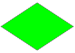

Para la formación de nuestras Conversaciones contamos con un panel que contiene de partida el nodo inicial. A partir de este, podremos ir añadiendo los nodos que queramos seleccionando el nodo al que queramos añadir un hijo y pulsando en alguna de las opciones del submenú.
Una vez finalizada, podemos ver como funciona nuestra conversación pulsando en Previsualizar, o ver tan sólo un nodo seleccionado pulsando en Previsualizar nodo seleccionado.
Nodo inicial: es el nodo en el que comienza la Conversación.

Nodo de diálogo normal: nodo que contiene un extracto de conversación normal.

Nodo de diálogo final: la conversación finaliza cuándo alcanza uno de estos nodos.
Para cada uno de estos nodos contamos siempre con un panel Nodo
de diálogo en el que podemos insertar líneas en la
conversación pulsando  .
.
Para cada una de estas líneas, podemos elegir el personaje (o el protagonista) que queremos que diga la frase y el contenido de la misma.

Nodo de opción: Estos nodos permiten decidir el rumbo de la conversación a través de una serie de opciones que podemos ir añadiendo si, con el nodo de opción seleccionado, pulsamos en Añadir nueva opción.
Para este tipo de nodo tenemos un panel Nodo de opciones en el que podemos elegir el texto que aparecerá para cada opción posible.